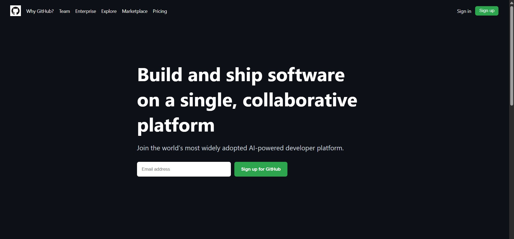
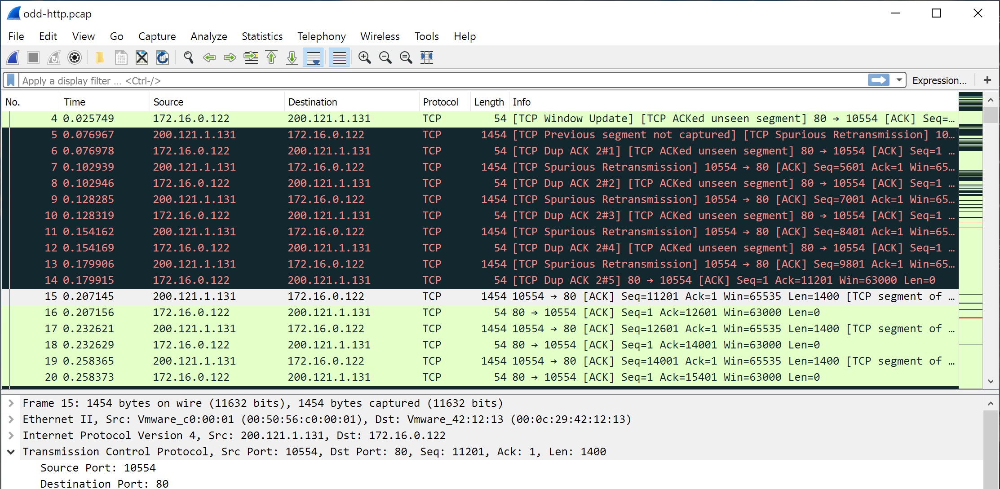

Website Homepage Clone

Cloned the homepage of a real website using HTML and CSS to understand layout structure, responsiveness, and styling techniques.
A collection of hands-on projects and practice work completed as part of my learning journey in cybersecurity, Linux, OSINT, networking, and web development.

Cloned the homepage of a real website using HTML and CSS to understand layout structure, responsiveness, and styling techniques.
Practiced Linux and Kali Linux commands including networking tools, system monitoring, and basic security utilities.
Created basic Bash scripts to automate tasks such as log monitoring, system checks, and command execution on Linux systems.
Performed Open-Source Intelligence (OSINT) on the website Brototype to collect publicly available information such as domain details, technologies used, digital footprint, and online presence. All findings were properly documented.

Performed basic packet analysis using Wireshark to observe network traffic, analyze protocols such as TCP, UDP, HTTP, and DNS, and understand packet flow within a network environment.
Analyzed system and authentication logs to understand system events, user activity, and security-related entries. Practiced identifying important log patterns used in troubleshooting and security monitoring.